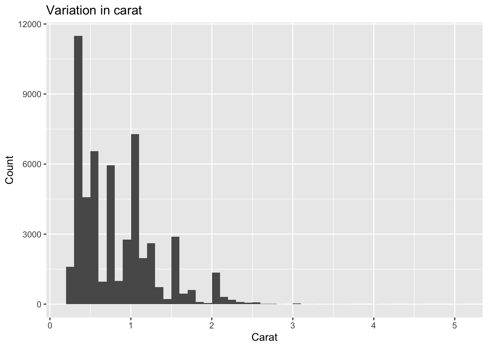
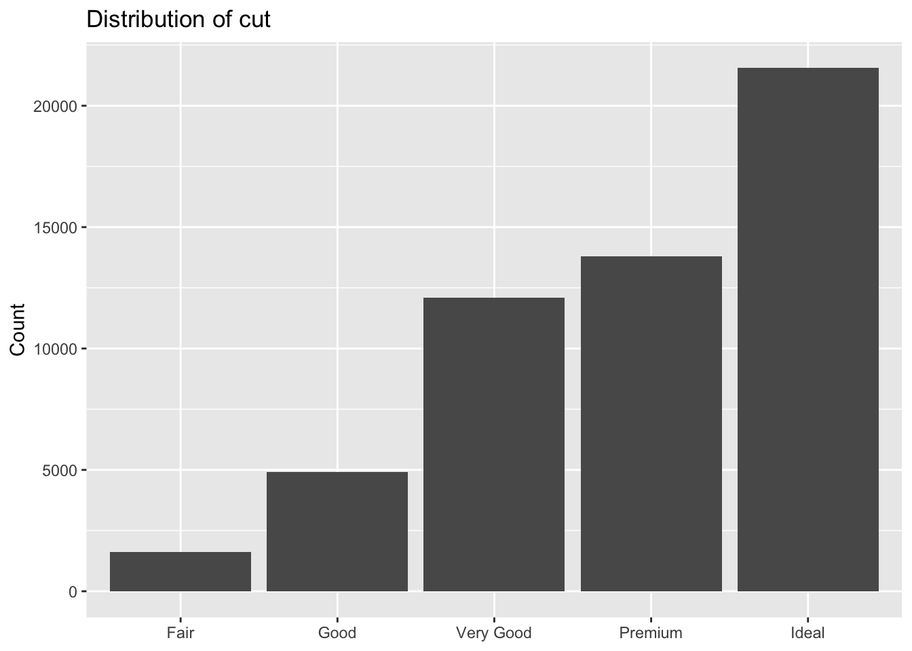
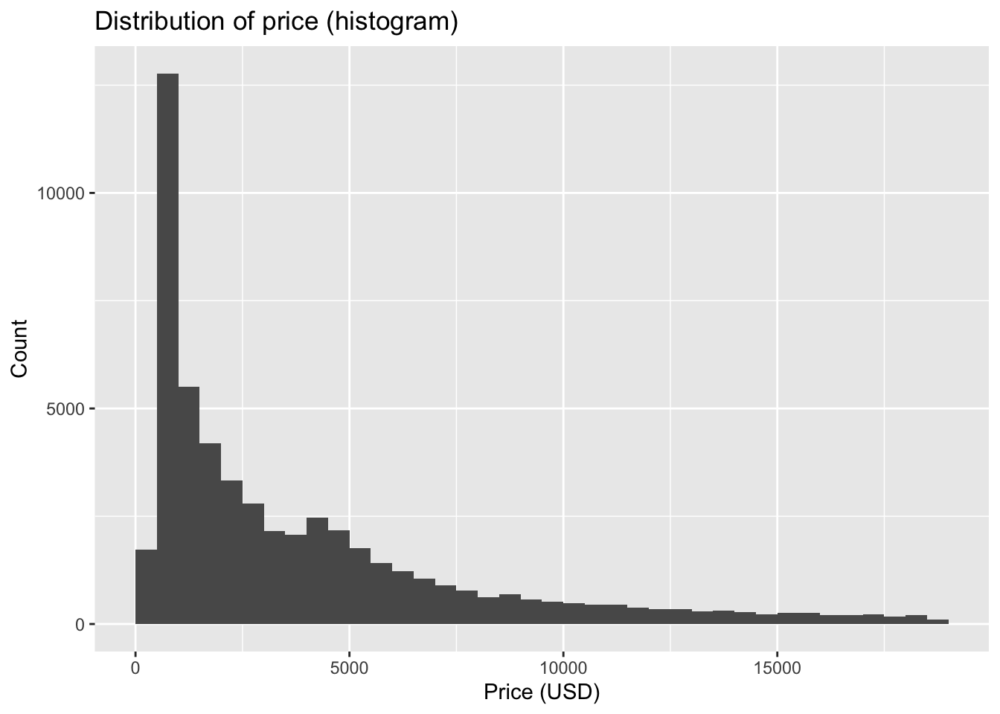
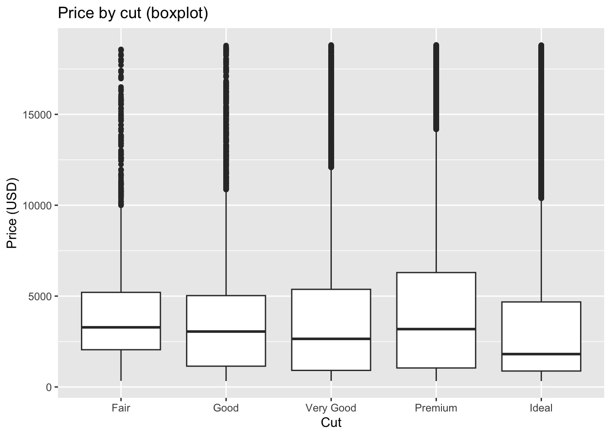
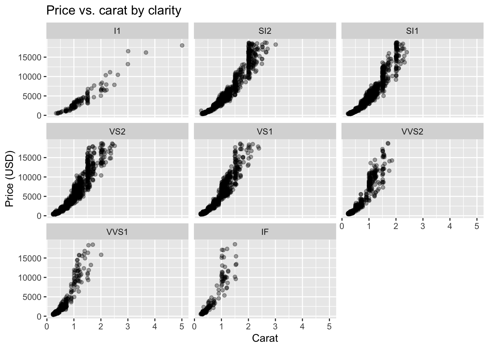

7 Exploratory Data Analysis (EDA)
Exploratory Data Analysis (EDA) is the practice of using graphs and numerical summaries to become familiar with a dataset before formal modeling. The term was popularized by John Tukey in his influential book Exploratory Data Analysis (Tukey, 1977), and it remains a cornerstone of modern data science. The purpose of EDA is to reveal the main characteristics of the data, detect unusual cases, check the quality of measurements, and generate hypotheses that can guide later modeling. Unlike confirmatory analysis, which tests specific hypotheses with formal statistical procedures, EDA is open ended and iterative. Analysts move back and forth between plotting, summarizing, and transforming data, refining their understanding at each step.
Figure 7.1 shows the data science workflow in a compact layout, generated directly in R. Compared with embedding static images, this approach keeps your notes reproducible and editable. The flowchart emphasizes that exploratory data analysis sits between data transformation and modeling. It also highlights feedback loops: visualization can suggest new transformations, and communication can lead back to data collection.
We will use ggplot2::diamonds as a running example. It contains about fifty four thousand round‑cut diamonds with carat, cut, color, clarity, depth, table, price, and x/y/z dimensions. The dataset is big enough to be realistic while still rendering quickly in class.
Tip
Tip. Always write your EDA as runnable code. Reproducible EDA makes your figures defensible and your insights repeatable.
7.1 Questions to consider
When beginning an EDA it is useful to ask two broad questions that frame all of the work. These questions remind us that analysis is about patterns, not isolated numbers.
What type of variation occurs within variables?
Variation refers to the tendency of a variable to take different values from one observation to another. Even for simple variables like eye color or carat weight, no two individuals are exactly the same. Understanding the spread and shape of this variation is the first task of EDA.What type of covariation occurs between variables?
Covariation describes the way two or more variables move together in a related fashion. For instance, diamond carat and price tend to increase together. Examining such relationships gives insight into possible explanations and later modeling choices.
7.1.1 Useful terms
Clear vocabulary helps organize thinking during EDA.
Variable. A measurable characteristic such as carat, cut, or price. Variables may be quantitative or qualitative.
Value. The state of a variable when it is measured. Values can differ across observations; for example, two diamonds can have different carat weights.
Observation. A set of measurements recorded on the same unit at the same time. In
diamonds, each row is one diamond with values for all variables.Tabular data. A collection of values arranged with variables in columns and observations in rows. Data is called tidy when each value occupies its own cell, making manipulation and visualization straightforward.
Code
library(tidyverse)
glimpse(diamonds)Rows: 53,940
Columns: 10
$ carat <dbl> 0.23, 0.21, 0.23, 0.29, 0.31, 0.24, 0.24, 0.26, 0.22, 0.23, 0.…
$ cut <ord> Ideal, Premium, Good, Premium, Good, Very Good, Very Good, Ver…
$ color <ord> E, E, E, I, J, J, I, H, E, H, J, J, F, J, E, E, I, J, J, J, I,…
$ clarity <ord> SI2, SI1, VS1, VS2, SI2, VVS2, VVS1, SI1, VS2, VS1, SI1, VS1, …
$ depth <dbl> 61.5, 59.8, 56.9, 62.4, 63.3, 62.8, 62.3, 61.9, 65.1, 59.4, 64…
$ table <dbl> 55, 61, 65, 58, 58, 57, 57, 55, 61, 61, 55, 56, 61, 54, 62, 58…
$ price <int> 326, 326, 327, 334, 335, 336, 336, 337, 337, 338, 339, 340, 34…
$ x <dbl> 3.95, 3.89, 4.05, 4.20, 4.34, 3.94, 3.95, 4.07, 3.87, 4.00, 4.…
$ y <dbl> 3.98, 3.84, 4.07, 4.23, 4.35, 3.96, 3.98, 4.11, 3.78, 4.05, 4.…
$ z <dbl> 2.43, 2.31, 2.31, 2.63, 2.75, 2.48, 2.47, 2.53, 2.49, 2.39, 2.…7.1.2 Variation
Every variable has its own pattern of variation, and these patterns often reveal important information. The best way to learn about the variation of a variable is to visualize its distribution.
- For categorical variables, variation shows up in the relative frequencies of categories.
- For quantitative variables, variation appears in the spread and shape of the distribution.
Code
# variation in cut (categorical)
diamonds |>
count(cut) |>
mutate(prop = n / sum(n))Code
# variation in carat (numeric)
library(ggplot2)
ggplot(diamonds, aes(carat)) +
geom_histogram(binwidth = 0.1, boundary = 0, closed = "left") +
labs(title = "Variation in carat", x = "Carat", y = "Count")
7.1.3 Visualizing distributions
How to visualize a distribution depends on the type of variable.
- Categorical variables take one of a small set of levels and are usually stored as factors or character vectors in R. Bar charts are a natural choice for displaying their distributions.
Code
ggplot(diamonds, aes(cut)) +
geom_bar() +
labs(title = "Distribution of cut", x = NULL, y = "Count")
- Quantitative variables take on a wide range of values. Their distributions are best displayed with histograms, density curves, or boxplots.
Code
ggplot(diamonds, aes(price)) +
geom_histogram(binwidth = 500, boundary = 0, closed = "left") +
labs(title = "Distribution of price", x = "Price (USD)", y = "Count")
7.1.4 Outliers
Outliers are values that stand apart from the general pattern of the rest of the data. They may be errors, unusual but valid cases, or the most interesting part of the dataset. Detecting outliers is an essential part of EDA, because they can distort summaries and influence models.
- Outliers in quantitative variables are extreme values far from the bulk of the distribution.
- Outliers in categorical variables are rare levels that occur only a handful of times.
Code
# look at top-priced diamonds
library(dplyr)
diamonds |>
arrange(desc(price)) |>
select(carat, cut, color, clarity, price) |>
head(10)Code
# scatterplot to reveal unusual points
library(ggplot2)
ggplot(diamonds, aes(carat, price)) +
geom_point(alpha = 0.3) +
labs(title = "Carat vs. price with potential outliers",
x = "Carat", y = "Price (USD)")
Note
Note. Not every outlier should be removed. Some may hold the key to a new insight, while others may be errors worth correcting. Document any decisions you make.
7.2 Conditional statements
Many insights arise from studying how a variable behaves given the level of another variable. These conditional relationships are the basis for understanding covariation.
- Numeric given categorical. Compare distributions of a numeric variable across categories.
- Numeric given numeric. Study scatterplots, possibly with facets, to see how the relationship changes across groups.
Code
# price conditional on cut
ggplot(diamonds, aes(cut, price)) +
geom_boxplot(outlier.alpha = 0.2) +
labs(title = "Price distribution by cut", x = NULL, y = "Price (USD)")
Code
# carat vs. price conditional on clarity
set.seed(1)
d_small <- diamonds[sample(nrow(diamonds), 8000), ]
ggplot(d_small, aes(carat, price)) +
geom_point(alpha = 0.35) +
facet_wrap(~ clarity) +
labs(title = "Price vs. carat by clarity",
x = "Carat", y = "Price (USD)")
Tip
Tip. Faceting is usually clearer than mapping too many aesthetics at once. Use small multiples to keep comparisons interpretable.
7.3 Good Practices
- Prefer simple, readable graphics over clever ones.
- Keep code blocks short and name intermediate objects clearly.
- Mix visual and tabular summaries; each catches different issues.
- Record every data change. EDA often uncovers fixes that matter later.
- Revisit EDA after modeling; residuals are just another dataset.